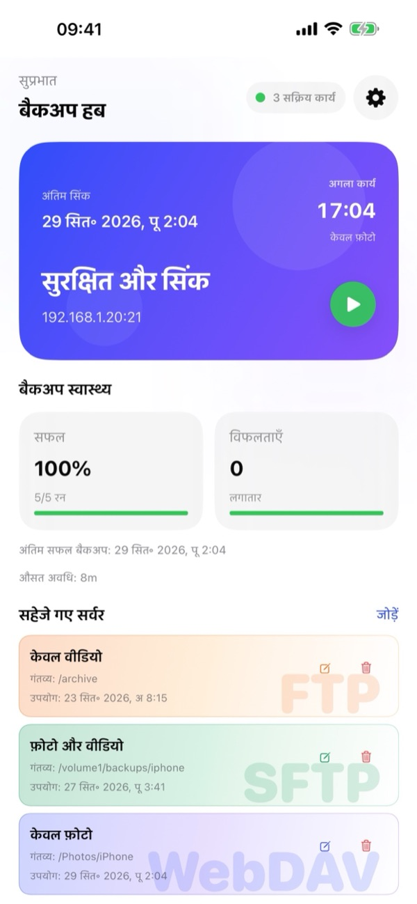
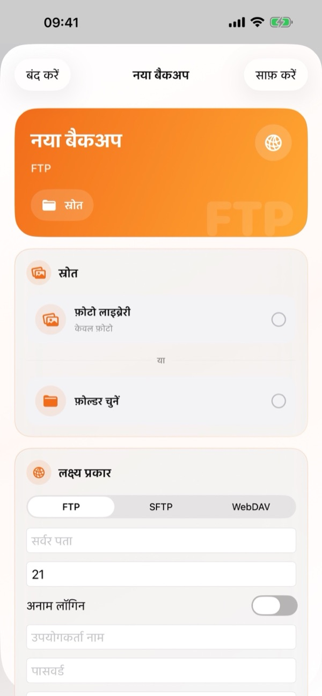
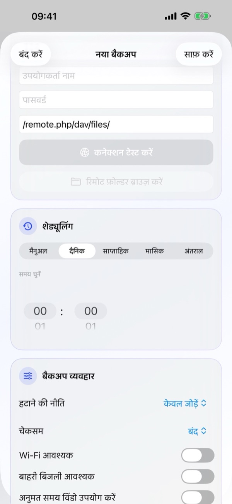
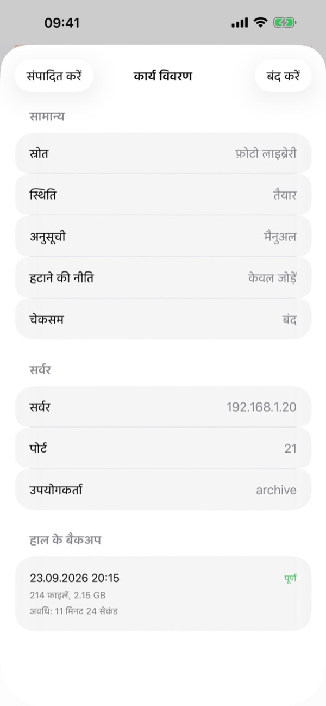
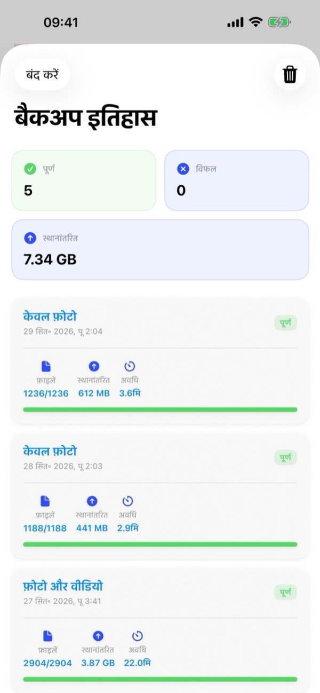
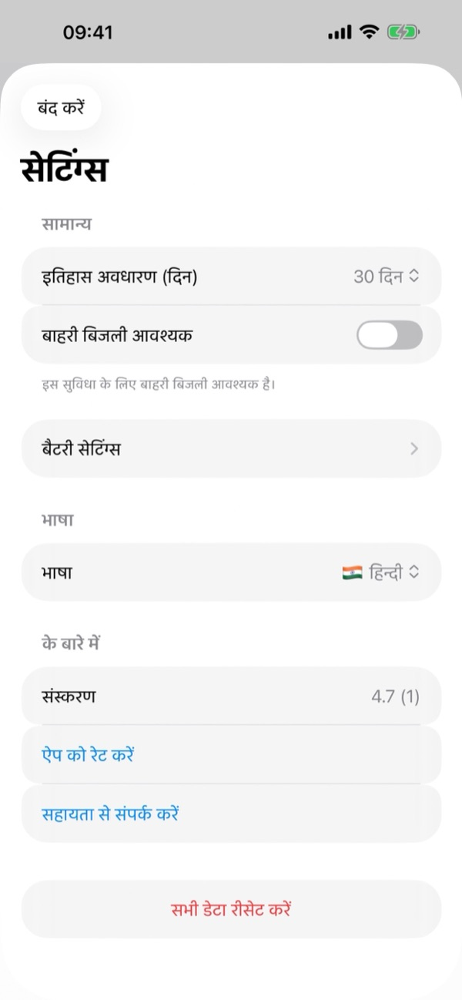

1. आपको क्या चाहिए
- एक संगत सर्वर: कोई भी NAS (Synology, QNAP, TrueNAS, Unraid), होम सर्वर या निजी क्लाउड (Nextcloud, ownCloud, WebDAV) जो FTP, SFTP (SSH) या WebDAV (HTTP/HTTPS) सपोर्ट करता हो।
- कनेक्शन विवरण: सर्वर का पता, पोर्ट (डिफ़ॉल्ट: FTP 21, SFTP 22, WebDAV 443/80), उपयोगकर्ता नाम और पासवर्ड (FTP के लिए अनाम लॉगिन भी उपलब्ध)।
- iOS अनुमतियाँ: फ़ोटो की पूर्ण अनुमति, होम सर्वर के लिए लोकल नेटवर्क अनुमति, और नोटिफ़िकेशन।
2. बैकअप हब का परिचय
BackupFlow खोलने पर बैकअप हब आपकी बैकअप प्रणाली की लाइव स्थिति दिखाता है:
- स्टेटस कार्ड: पिछला सिंक समय, अगले टास्क का समय, सुरक्षा स्थिति, सर्वर पता और तुरंत बैकअप शुरू करने के लिए हरा प्ले (▶) बटन दिखाता है।
- बैकअप स्वास्थ्य: सफलता दर (प्रतिशत और कुल रन), लगातार विफलताएँ, पिछला सफल बैकअप और औसत समय दिखाता है।
- सहेजे गए सर्वर: आपके सभी FTP, SFTP और WebDAV टास्क के कार्ड, जिनमें त्वरित संपादित करें (✏️) और हटाएँ (🗑️) बटन शामिल हैं। किसी भी कार्ड पर टैप करके टास्क विवरण खोलें।
- निचला बार और सेटिंग्स: नीचे दिए गए तीन बटनों से सिंक/रन (🔄) करें, बैकअप इतिहास (🕒) खोलें या नया बैकअप (+) बनाएँ। ऊपर दाईं ओर गियर आइकन (⚙️) से सेटिंग्स खुलती हैं।

3. नया बैकअप बनाएँ
बैकअप हब के नीचे + बटन (या सहेजे गए सर्वर के पास जोड़ें) पर टैप करके नया बैकअप स्क्रीन खोलें:
- स्रोत: फ़ोटो लाइब्रेरी (केवल फ़ोटो, केवल वीडियो, या दोनों) चुनें या iOS Files ऐप से कोई फ़ोल्डर चुनने के लिए फ़ोल्डर चुनें पर टैप करें।
- लक्ष्य प्रकार: FTP, SFTP या WebDAV चुनें। सर्वर पता, पोर्ट, उपयोगकर्ता नाम, पासवर्ड और रिमोट पथ (जैसे
/remote.php/dav/files/) दर्ज करें। कनेक्शन टेस्ट करें पर टैप करें और चाहें तो रिमोट फ़ोल्डर ब्राउज़ करें से गंतव्य फ़ोल्डर चुनें। - शेड्यूलिंग: मैनुअल, दैनिक, साप्ताहिक, मासिक या अंतराल चुनें और समय चुनें में समय सेट करें।
- बैकअप व्यवहार: हटाने की नीति, चेकसम और नेटवर्क/पावर शर्तें चुनें और टास्क सेव करें।
पहले पूर्ण बैकअप के बाद, केवल नई या बदली हुई फ़ाइलें ही भेजी जाती हैं, जिससे अगले बैकअप बहुत तेज़ी से पूरे होते हैं।


4. टास्क विवरण और प्रबंधन
सहेजे गए सर्वर में किसी भी टास्क पर टैप करके टास्क विवरण देखें:
- सामान्य: स्रोत, वर्तमान स्थिति, शेड्यूल, हटाने की नीति और चेकसम देखें।
- सर्वर: सर्वर का पता, पोर्ट और उपयोगकर्ता नाम देखें।
- हाल के बैकअप: इस टास्क के पिछले बैकअप रन का समय, स्थिति, फ़ाइलों की संख्या, आकार और अवधि देखें।
- ऊपर बाईं ओर संपादित करें पर टैप करके टास्क में बदलाव करें।

5. शेड्यूलिंग और शर्तें
शेड्यूलिंग में आप मैनुअल, दैनिक, साप्ताहिक, मासिक या अंतराल चुन सकते हैं और समय चुनें में समय निर्धारित कर सकते हैं।
बैकअप व्यवहार में आप तय कर सकते हैं कि ऑटोमैटिक बैकअप कब चले:
- Wi-Fi आवश्यक: मोबाइल डेटा का उपयोग कभी नहीं करता।
- बाहरी बिजली आवश्यक: केवल तभी चलता है जब iPhone चार्ज हो रहा हो।
- अनुमत समय विंडो उपयोग करें: केवल चुने गए समय (जैसे रात में) के दौरान बैकअप चलाता है।
- न्यूनतम बैटरी स्तर (सेटिंग्स › बैटरी सेटिंग्स में): बैटरी कम होने पर बैकअप छोड़ देता है।
6. हटाने की नीति, चेकसम और iCloud
बैकअप व्यवहार में चुनें कि iPhone पर फ़ाइलें डिलीट करने पर सर्वर पर क्या हो और फ़ाइल की जाँच कैसे हो:
- हटाने की नीति › केवल जोड़ें
- सर्वर से कभी कुछ डिलीट नहीं होता। यदि आप बैकअप के बाद iPhone में जगह खाली करने के लिए फ़ोटो डिलीट करना चाहते हैं, तो इसी विकल्प को चुनें।
- हटाने की नीति › मिरर
- सर्वर फ़ोल्डर को स्रोत की हूबहू कॉपी रखता है। iPhone से हटाई गई फ़ाइलें सर्वर से भी डिलीट हो जाती हैं।
- हटाने की नीति › आर्काइव हटाना
- हटाई गई फ़ाइलें डिलीट होने के बजाय सर्वर पर तारीख वाले .backupflow_archive फ़ोल्डर में चली जाती हैं।
- चेकसम (Checksum)
- अपलोड के बाद जाँचता है कि हर फ़ाइल सर्वर पर सही-सलामत पहुँची है (अधिकतम गति के लिए डिफ़ॉल्ट बंद)।
iCloud फ़ोटो टिप: आवश्यक होने पर iCloud आइटम डाउनलोड करें चालू करें ताकि केवल iCloud में रखे गए मूल फ़ोटो और वीडियो का भी बैकअप लिया जा सके।
7. बैकग्राउंड में बैकअप
BackupFlow शेड्यूल किए गए बैकअप चलाने के लिए iOS के BGTaskScheduler का उपयोग करता है। चूँकि iOS बैटरी और उपयोग के आधार पर बैकग्राउंड समय तय करता है, इसलिए बैकअप तय समय से कुछ देर बाद शुरू हो सकता है या नोटिफ़िकेशन भेज सकता है।
यदि iOS बीच में बैकअप रोक दे, तो ऐप खोलने पर यह वहीं से आगे बढ़ता है और पहले भेजी जा चुकी फ़ाइलों को छोड़ देता है। बड़े शुरुआती बैकअप के लिए iPhone को Wi-Fi और चार्जर से जोड़े रखें।
8. बैकअप इतिहास
बैकअप हब के निचले बार के बीच वाले इतिहास (🕒) बटन पर टैप करके बैकअप इतिहास खोलें:
- सारांश कार्ड: ऊपर कुल पूर्ण, विफल और कुल ट्रांसफ़र किए गए डेटा (GB/MB) की जानकारी देखें।
- विस्तृत लॉग: हर कार्ड में टास्क का नाम, तारीख, स्थिति, फ़ाइल संख्या (जैसे
1236/1236), आकार और समय दिखता है। ऊपर दाईं ओर ट्रैश आइकन (🗑️) से इतिहास साफ़ कर सकते हैं।

9. ऐप सेटिंग्स
बैकअप हब के ऊपर दाईं ओर गियर आइकन (⚙️) पर टैप करके सेटिंग्स खोलें:
- इतिहास अवधारण (दिन): इतिहास कितने दिनों तक रखा जाए चुनें (जैसे 30 दिन)।
- बाहरी बिजली आवश्यक और बैटरी सेटिंग्स: पावर और न्यूनतम बैटरी नियम।
- भाषा: समर्थित 12 भाषाओं में से किसी भी भाषा में ऐप इंटरफ़ेस तुरंत बदलें।
- के बारे में: ऐप वर्ज़न देखें, ऐप को रेट करें या सहायता से संपर्क करें पर टैप करें।
- सभी डेटा रीसेट करें: इस iPhone से सभी टास्क, इतिहास और सहेजे गए पासवर्ड हटाता है। आपके सर्वर की फ़ाइलों को छुआ नहीं जाता।

10. समस्या समाधान
- सर्वर से कनेक्ट नहीं हो पा रहा है।
- पता, पोर्ट (FTP 21, SFTP 22, WebDAV 443/80), उपयोगकर्ता नाम और पासवर्ड जाँचें। होम सर्वर के लिए सुनिश्चित करें कि iPhone उसी Wi-Fi पर है और iPhone सेटिंग्स › गोपनीयता और सुरक्षा › लोकल नेटवर्क › BackupFlow चालू है।
- शेड्यूल किया गया बैकअप नहीं चला।
- बैकअप व्यवहार की शर्तें (Wi-Fi, बिजली, समय विंडो, बैटरी) और नोटिफ़िकेशन अनुमति जाँचें।
- कुछ फ़ोटो गायब हैं।
- फ़ोटो की पूर्ण अनुमति दें और आवश्यक होने पर iCloud आइटम डाउनलोड करें चालू करें।
- सर्वर से फ़ाइलें हट गईं।
- टास्क की हटाने की नीति को मिरर से बदलकर केवल जोड़ें या आर्काइव हटाना करें।
- SFTP सुरक्षा चेतावनी दिख रही है।
- सर्वर की SSH पहचान बदल गई है। सर्वर दोबारा इंस्टॉल होने पर यह सामान्य है; अन्यथा अपने सर्वर एडमिन से संपर्क करें।
11. गोपनीयता और सुरक्षा
आपकी फ़ाइलें सीधे आपके iPhone से आपके सर्वर पर जाती हैं। BackupFlow का अपना कोई सर्वर नहीं है, यह आपकी फ़ाइलें कभी नहीं देखता और कोई डेटा इकट्ठा नहीं करता। पासवर्ड iOS कीचेन (Keychain) में सुरक्षित रूप से एन्क्रिप्टेड रहते हैं। पूरी जानकारी के लिए हमारी गोपनीयता नीति पढ़ें।
12. मदद चाहिए?
ऐप में सेटिंग्स › सहायता से संपर्क करें पर जाएँ (या tamersavasci@icloud.com पर ईमेल करें)। ऐप वर्ज़न और डिवाइस मॉडल अपने-आप जुड़ जाते हैं।